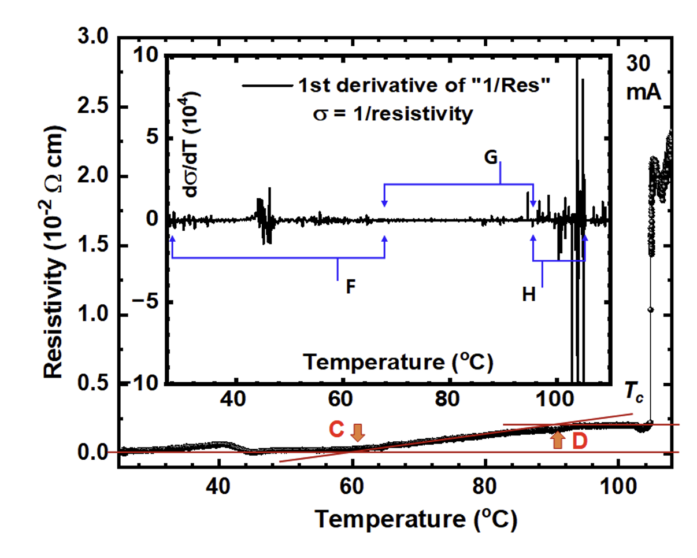
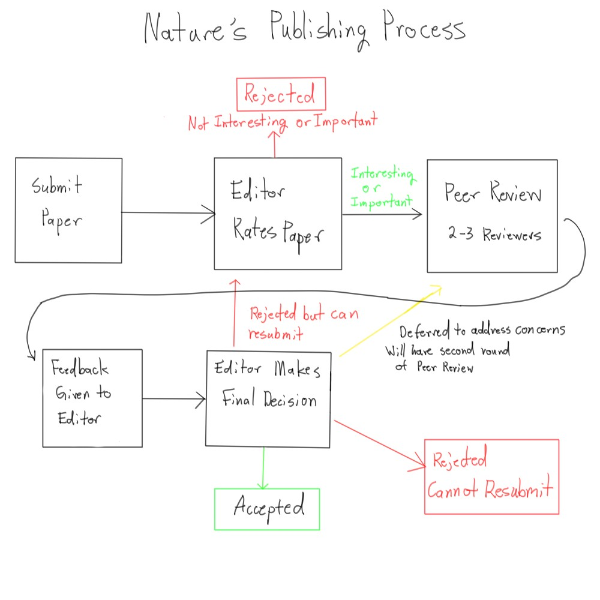

Image by Hyun-Tak Kim
LK-99 And The Unknown Side of Science
Around midnight on Friday July 21st, 2023 a paper is uploaded to arxiv.org a online archive of research papers. I was probably sleeping at the time and an event like this was nothing out of the ordinary. It was not published anywhere and the authors were not well known. No one should have cared about this preprint and yet the entire world would soon be driven into frenzy. Why? Because it claimed to have discovered the holy grail of material science a room temperature superconductor called LK-99. In the simplest terms the paper was claiming the that their new material would be in essence a replacement for copper. Superconductors are materials that perfectly conduct electricity unlike a material like copper that will actually lose a bit of the electricity as it passes through. Pretty much all electronics would become more efficient with a room temperature superconductor.
By Wednesday the following week all my social media from reddit to twitter had someone talking about LK-99. One tweet had over 3 Million Views! Maybe it was the release of ChatGPT months earlier or just the desire for change due to the pandemic but nonetheless it was this discovery that transfixed the public like few had before. And yet the claim of this superconductor was unproven and quickly started the rollercoaster that was the scientists from around the world scrambling to replicate the findings of the paper.
Superconducting magnet engineer chiming in.
— Andrew Côté (@Andercot) July 26, 2023
This result could be very big news, and overnight revolutionize all of electronics and energy. It might not.
Here's a mental model for the non-expert to understand what's going on.
RTAPS: The good, the bad, and the ugly: 🧵 pic.twitter.com/mS8mliXDUZ
Major national and university laboratories rushed to be the first to confirm the findings. The Wikipedia page for LK-99 even had an entire section that was being updated to show the status of replication for different labs. This entire situation to put it lightly, was odd as usually labs would patiently wait on one another or until the paper was actually properly published but here it felt like a competition. The reason for this was the fact that based on the paper it felt that anyone and their grandma could seemingly reproduce LK-99. The process outlined was almost too simple and only needed copper phosphate and lead sulfate that many scientists already had laying around in their lab. Some of the more chemically savvy members of the public even announced that they would try and DIY the material by themselves within their homes. Some of these DIYers would steam or tweet their progress online for all the world to witness.
Indeed the draw of LK-99 that it was both cheap and a room temperature super conductor. It was so simple to make that many scientists felt wrong to not at least attempt to replicate the findings. The public's desires for results were answered when on August 1st, 2023 a video on the Chinese social media platform BiliBili showed what was claimed to be LK-99 levitating. Levitation is a sign of what is called the Meisner effect which is when it expels all magnetic fields causing levitation above magnets and is a property of all superconducting materials but is not unique to superconductors. The levitation of LK-99 would change public sentiment from skepticism to faith as it felt more real than ever. However, it was not all sunshine and rainbows as buried within maelstrom of posts on the levitation were the troubling posts of LK-99 being a facade of superconductivity. The hype though would prevent these revelations from gaining traction for quite some time.
The floating rock was enough for the public to be convinced and I don't blame them because effect was straight out of science fiction and it didn't help the discourse promoted the idea that it was a silver bullet. After the first week of August not a single lab was able to definitely show a drop to 0 electrical resistance. Electrical Resistance is generally just how well an object can conduct electricity and dropping to a resistance of 0 is what defines a superconductor. The hope and hype of the public waned as no conclusive evidence was published. The final nail in LK-99's coffin came on August 16th, 2023 in an article by Nature that showed it was not a superconductor. LK-99 was actually the direct opposite of an superconductor being an insulator or a material that actively stops electricity from conducting through it. The reason that it was thought to be a superconductor was because it contained impurities from the creation process which is what actually caused the superconductive effects and the inconsistent results from different labs. It was fool's gold for material scientists that resolved rather quickly and anticlimactically.
So it was all a misunderstanding from a paper that hadn't even gone through peer review right? Science for the public is about the big discoveries and this discovery was simply a dud but there are far more beneath the surface left to uncover. The true story of LK-99 lies not in the material but the people behind it. While it cannot be proven to be malicious the diagrams in the paper from the very beginning were suspect and the actions of the authors in the aftermath have been strange. Questions arise like why would a scientist fake findings or claim a lie? What is the point of risking your reputation by bypassing the normal process? What is the normal process? The partial answer lies in the system in which papers are selected and published and it all starts with a innocent question of who uploaded the paper anyway?
Misconduct or Mistake?
The two major scientists for LK-99 are Sukbae Lee and Jihoon Kim who's initials are where the material's name is derived from. However, these two people while both being the first authors or the primary people behind the paper were not the ones that uploaded the paper. The situation is stranger as there were actually two paper uploaded to arxiv about LK-99 but the papers were completely different. The first paper that generated the hype was uploaded by Young-Wan Kwon while the second paper uploaded Hyuntak Kim doesn't even include Kwon as an author.
This double case of papers just doesn't make sense. It is completely normal to edit and change papers before being published but these papers are completely different from one another and don't even have the same authors aside from Sukbae Lee and Jihoon Kim. Hyuntak Kim even said the first paper by Kwon was uploaded without his permission and had many defects. Kwon's motivations remain unclear but from the outside it feels that Kwon was trying to steal a bit of the hype or acknowledgment by having his name on it compared to the other paper. No matter the reason this is obviously not proper conduct whatsoever and cast doubt on the entire discovery if the researchers can't even get the authors straight. Aside from the upload oddity the graphs in the second "correct" version are also have many problems.
According to Professor Philip Moriarty from the Youtube channel Sixty Symbols the presentation of data is almost laughable. In the graph above the units on the y-axis are too big to show 0 resistivity of LK-99. He pointed out how even a "first year physics textbook" would tell you the units should have been 10^-8 cm not 10^-2 cm. Furthermore, a superconductor is supposed to have a sudden drop to a resistance of 0 that the graph doesn't actually show and instead shows a slow eventually drop to what seems to be 0. The odd drop-off is already strange but the wrong units is just unacceptable for a paper done by researchers.
The authors promised fix the mistakes and claimed better results that proved without a doubt it is a room temperature superconductor but its 2025 now and their promise has still not materialized. The general consensus this debacle is that they should've just had the paper published and gone through peer review. The answer is always seemingly just peer review but why is it so important and would it have actually stopped LK-99 from happening?
What's the Deal with Peer Review?
The common solution that every scientist comes up with when it comes to cases like LK-99 is to just not care about papers until it has been properly peer reviewed and published in some scientific journal. Peer review is always thrown around as the answer and is considered fundamental to the scientific system but surprisingly this process is not as clearly defined as one would think. Generally speaking peer review is where a paper is thoroughly checked and vetted by another scientist working in the same field. The scientist would then say if the paper is indeed good or if it needs edits. Simple right?
This definition is on the surface quite good but there is actually no single clear ruleset for peer review and instead it is decided by the journal that would publish the paper. In Nature a well known scientific journal, the editors will first pick the papers that seem to most intriguing and then once selected the editor will choose scientists that can peer review the paper. There will usually be 2-3 reviewers who will give feedback on the paper. The editor gets to make all the decisions regarding who to send it to and the reviewers stay anonymous unless they willingly reveal themselves. To add insult to injury the peer reviewers are not paid by Nature and are instead volunteers. The editor after receiving the feedback will make a final decision on whether to publish or not. For a process that is so core to the scientific system it feels oddly unscientific and arbitrary.
According to a study on peer review by Jonathan P. Tennant and Tony Ross-Hellauer there is very little scientific research done on peer review. The paper concludes that many aspects of peer review have not enough scientific data to really support or undermine them. Worryingly, the paper also points out how peer review often feels like a black box where what exactly happens during peer review is unclear. There are not rulesets for everyone to follow and journals are free to add or subtract practically anything they want. The situations worsens as the job of peer review is extremely undervalued where scientists that actually do the reviews may not have the baseline skills necessary to conduct a proper review.
In fact, LK-99 may be a demonstration of the issues with the inconsistency of peer review. According to the Sukbae Lee one of the main authors they did try to publish their findings in to nature but were required to publish in another specialized journal. Lee then subsequently had it published in a domestic academic journal in April before the initial uploads to arxiv. This means that LK-99 did in fact have peer review but it wasn't able to prevent the event from occurring and in fact shoddy peer review may have caused the incident. This case exemplifies that not all peer review is created equal which begs to question how can peer review be improved so it is the answer to cases like LK-99.
How Do We Improve?
The question of how to fix these problems has no clear answer but there are couple of fundamental reforms that I think need to happen to improve the system. The peer review study believes that there needs to be more rigorous research done on peer review. I agree that peer review should not be put on a pedestal and needs to be an established field of research just like other topics in science. I personally also think that peer review needs to disconnected from journals and just be a required step before even submitting to a journal. In this way there can be both an universal ruleset for peer review while also allowing "less interesting" papers get peer reviewed.
These are only some possible changes and other suggestions may be even more effective but my point is to draw attention to the fact that there are holes in the current established system that should not be ignored. Science is an iterative process and that includes the way science is conducted itself. Hopefully in the future the process will be so refined that when there is a new LK-99 people won't have to be skeptical and instead simply be ecstatic.